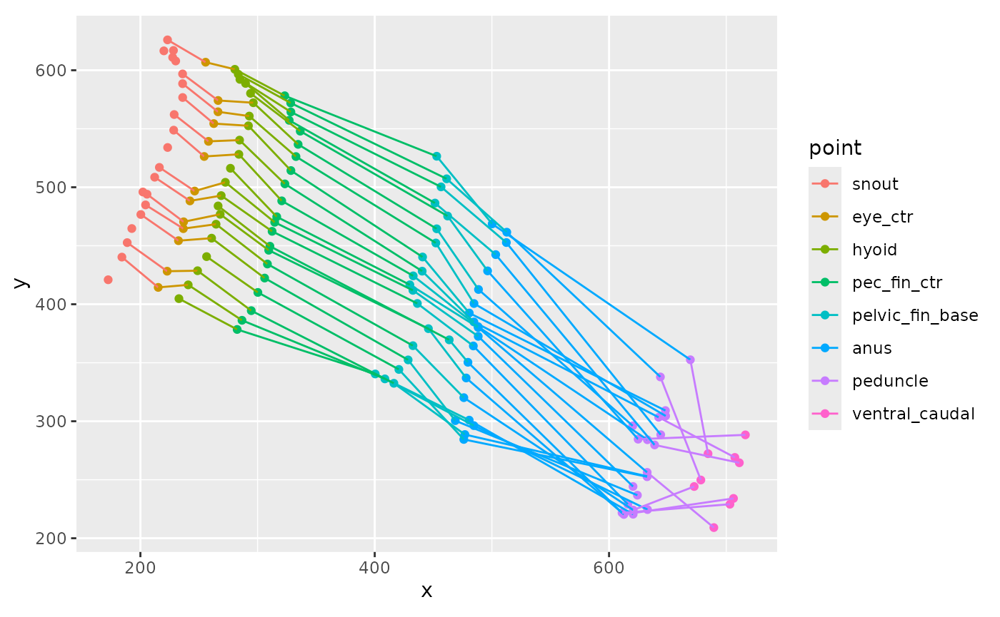
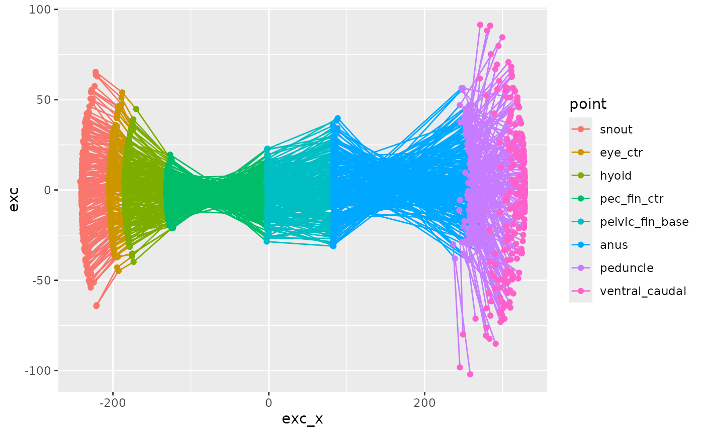
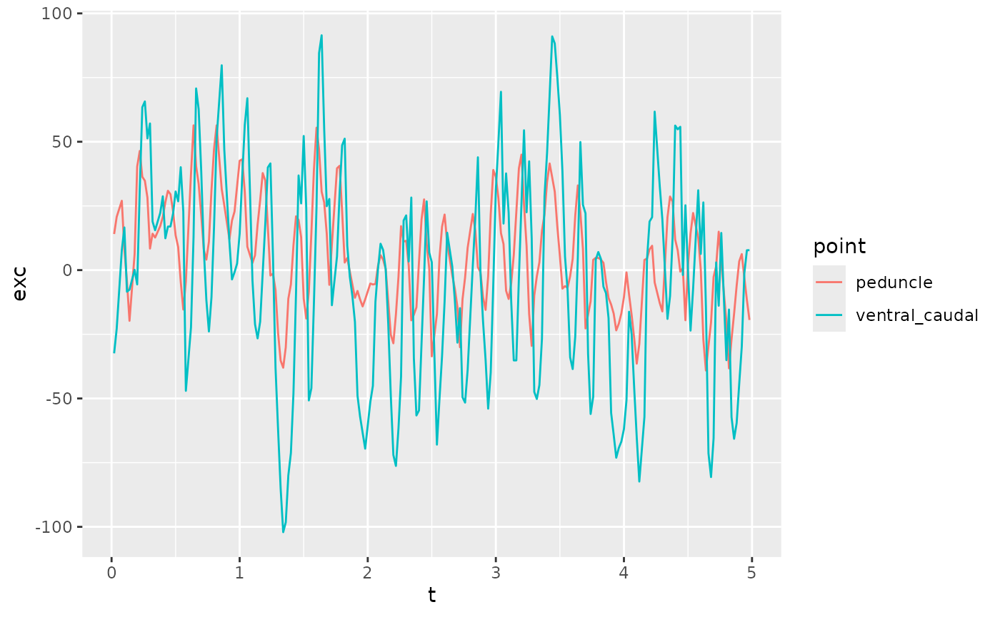
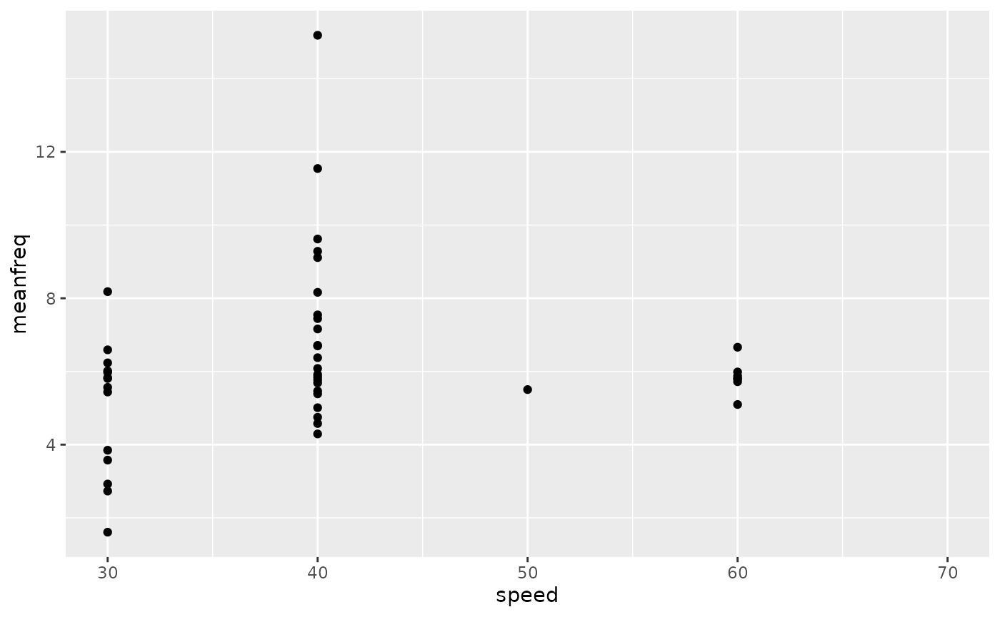

process_sleap_data
process_sleap_data.Rmd
library(fishmechr)
#> Warning: replacing previous import 'dplyr::filter' by 'gsignal::filter' when
#> loading 'fishmechr'
#> Warning: replacing previous import 'gsignal::conv' by 'pracma::conv' when
#> loading 'fishmechr'
#> Warning: replacing previous import 'gsignal::ifftshift' by 'pracma::ifftshift'
#> when loading 'fishmechr'
#> Warning: replacing previous import 'gsignal::findpeaks' by 'pracma::findpeaks'
#> when loading 'fishmechr'
#> Warning: replacing previous import 'gsignal::fftshift' by 'pracma::fftshift'
#> when loading 'fishmechr'
#> Warning: replacing previous import 'gsignal::ifft' by 'pracma::ifft' when
#> loading 'fishmechr'
#> Warning: replacing previous import 'gsignal::detrend' by 'pracma::detrend' when
#> loading 'fishmechr'
#>
#> Attaching package: 'fishmechr'
#> The following object is masked from 'package:stats':
#>
#> deriv
library(ggplot2)
library(tidyr)
library(dplyr)
#>
#> Attaching package: 'dplyr'
#> The following objects are masked from 'package:stats':
#>
#> filter, lag
#> The following objects are masked from 'package:base':
#>
#> intersect, setdiff, setequal, unionThese are your SLEAP output data files. This is example code that you could use. For the vignette, these data files are included in the package.
library(here)
sleapfiles <- c(
here("data-raw","2024-11-14_labels2.000_fish_01-030RPM-ortho-2024-11-14T044441.analysis.csv"),
here("data-raw","2024-11-14_labels2.001_fish_01-040RPM-ortho-2024-11-14T044525.analysis.csv"),
here("data-raw", "2024-11-14_labels2.002_fish_01-050RPM-ortho-2024-11-14T045204.analysis.csv"),
here("data-raw","2024-11-14_labels2.003_fish_01-060RPM-ortho-2024-11-14T044754.analysis.csv"),
here("data-raw","2024-11-14_labels2.004_fish_01-070RPM-ortho-2024-11-14T044858.analysis.csv")
)
parse_file_name <- function(fn)
{
d <- stringr::str_match(fn,
"_(?<id>\\w+_\\d+)-(?<speed>\\d+)RPM.+(?<datetime>\\d{4}-\\d{2}-\\d{2}T\\d{6})")
tibble::as_tibble_row(d[1, 2:4], .name_repair = "minimal")
}
zfishdata <- purrr::map(sleapfiles, \(fn) readr::read_csv(fn, id = "fn",
show_col_types = FALSE)) |>
bind_rows() |>
mutate(dd = purrr::map(fn, parse_file_name)) |>
unnest(dd) |>
mutate(fn = basename(fn),
speed = as.numeric(speed))
zfish_goodframes <- readr::read_csv(here("data-raw", "zfish_goodframes.csv"))
head(zfishdata)
#> # A tibble: 6 × 46
#> fn track frame_idx instance.score left_pec_fin_tip.x left_pec_fin_tip.y
#> <chr> <lgl> <dbl> <dbl> <dbl> <dbl>
#> 1 2024-11-… NA 0 NA 315. 185.
#> 2 2024-11-… NA 1 NA 315. 180.
#> 3 2024-11-… NA 2 9.99 317. 176.
#> 4 2024-11-… NA 3 NA 315. 169.
#> 5 2024-11-… NA 4 NA NA NA
#> 6 2024-11-… NA 5 9.84 NA NA
#> # ℹ 40 more variables: left_pec_fin_tip.score <dbl>, right_eye.x <dbl>,
#> # right_eye.y <dbl>, right_eye.score <dbl>, left_eye.x <dbl>,
#> # left_eye.y <dbl>, left_eye.score <dbl>, right_pec_fin_base.x <dbl>,
#> # right_pec_fin_base.y <dbl>, right_pec_fin_base.score <dbl>, anus.x <dbl>,
#> # anus.y <dbl>, anus.score <dbl>, hyoid.x <dbl>, hyoid.y <dbl>,
#> # hyoid.score <dbl>, dorsal_caudal.x <dbl>, dorsal_caudal.y <dbl>,
#> # dorsal_caudal.score <dbl>, peduncle.x <dbl>, peduncle.y <dbl>, …
head(zfish_goodframes)
#> # A tibble: 6 × 4
#> File Start End Block
#> <chr> <dbl> <dbl> <dbl>
#> 1 2024-11-14_labels2.000_fish_01-030RPM-ortho-2024-11-14T0444… 1 250 1
#> 2 2024-11-14_labels2.001_fish_01-040RPM-ortho-2024-11-14T0445… 1 250 1
#> 3 2024-11-14_labels2.002_fish_01-050RPM-ortho-2024-11-14T0452… 1 71 1
#> 4 2024-11-14_labels2.002_fish_01-050RPM-ortho-2024-11-14T0452… 167 250 2
#> 5 2024-11-14_labels2.003_fish_01-060RPM-ortho-2024-11-14T0447… 48 135 1
#> 6 2024-11-14_labels2.003_fish_01-060RPM-ortho-2024-11-14T0447… 224 250 2Frame rate from your cameras
fps <- 50These are all our points, ordered from head to tail
pointnames <- c("snout", "eye_ctr", "left_eye", "right_eye", "hyoid",
"pec_fin_ctr", "left_pec_fin_base", "left_pec_fin_tip",
"right_pec_fin_base", "right_pec_fin_tip", "pelvic_fin_base",
"anus", "peduncle", "ventral_caudal", "dorsal_caudal")
zfdata_ctr <-
zfishdata |>
mutate(eye_ctr.x = (left_eye.x + right_eye.x)/2,
eye_ctr.y = (left_eye.y + right_eye.y)/2,
eye_ctr.score = NA,
pec_fin_ctr.x = (left_pec_fin_base.x + right_pec_fin_base.x)/2,
pec_fin_ctr.y = (left_pec_fin_base.y + right_pec_fin_base.y)/2,
pec_fin_ctr.score = NA
)
zfdata_ctr <- zfdata_ctr |>
relocate(id, speed, datetime) |>
pivot_kinematics_longer(pointnames = pointnames)
head(zfdata_ctr)
#> # A tibble: 6 × 11
#> id speed datetime fn track frame_idx instance.score point x y
#> <chr> <dbl> <chr> <chr> <lgl> <dbl> <dbl> <fct> <dbl> <dbl>
#> 1 fish_01 30 2024-11-… 2024… NA 0 NA snout 144. 189.
#> 2 fish_01 30 2024-11-… 2024… NA 0 NA eye_… 173. 209.
#> 3 fish_01 30 2024-11-… 2024… NA 0 NA left… 188. 181.
#> 4 fish_01 30 2024-11-… 2024… NA 0 NA righ… 157. 237.
#> 5 fish_01 30 2024-11-… 2024… NA 0 NA hyoid 176. 221.
#> 6 fish_01 30 2024-11-… 2024… NA 0 NA pec_… 233. 238.
#> # ℹ 1 more variable: score <dbl>Now pull out just the good frames based on our other data table
zfdata_good <- list()
for (i in seq(1, nrow(zfish_goodframes))) {
good1 <- zfdata_ctr |>
filter(fn == zfish_goodframes$File[[i]],
between(frame_idx, zfish_goodframes$Start[[i]], zfish_goodframes$End[[i]])) |>
mutate(block = zfish_goodframes$Block[[i]])
zfdata_good[[i]] <- good1
}
zfdata_good <- bind_rows(zfdata_good)This shows the x and y positions of several of the points in multiple frames.
zfdata_good |>
arrange(speed, frame_idx, point) |>
filter(speed == 30,
between(frame_idx, 120, 140)) |>
filter(point %in% c("snout", "hyoid", "eye_ctr", "pec_fin_ctr",
"pelvic_fin_base", "anus", "peduncle", "ventral_caudal")) |>
ggplot(aes(x = x, y = y, color = point)) +
geom_point() +
geom_path(aes(group = frame_idx)) +
coord_fixed()
#> Warning: Removed 20 rows containing missing values or values outside the scale range
#> (`geom_point()`).
#> Warning: Removed 12 rows containing missing values or values outside the scale range
#> (`geom_path()`).
This shows just the y coordinate against frame number.
zfdata_good |>
arrange(speed, frame_idx, point) |>
filter(speed == 40,
between(frame_idx, 120, 250)) |>
filter(point %in% c("snout", "peduncle", "ventral_caudal")) |>
ggplot(aes(x = frame_idx, y = y, color = point)) +
geom_point() +
geom_path()
#> Warning: Removed 39 rows containing missing values or values outside the scale range
#> (`geom_point()`).This smooths the data and fills in gaps. Focus just on the points along the ventral midline for right now.
zfdata_sm <-
zfdata_good |>
arrange(speed, frame_idx, point) |>
filter(point %in% c("snout", "hyoid", "eye_ctr", "pec_fin_ctr",
"pelvic_fin_base", "anus", "peduncle", "ventral_caudal")) |>
group_by(fn, frame_idx) |>
# calculate the arc length
mutate(arclen0 = arclength(x, y, na.skip = TRUE)) |>
# smooth and fill gaps
interpolate_points_df(arclen0, x, y, spar = 0.2,
tailmethod = 'extrapolate',
fill_gaps = 1,
.frame = frame_idx,
.out = c(arclen='arclen', xs='xs', ys='ys')) |>
ungroup()
zfdata_sm |>
arrange(speed, frame_idx, point) |>
filter(speed == 40,
between(frame_idx, 120, 250)) |>
filter(point %in% c("snout", "peduncle", "ventral_caudal")) |>
ggplot(aes(x = frame_idx, y = ys, color = point)) +
geom_point() +
geom_path()Now we need to find the center of mass. For that we need the width and height of the body at each point along the body. These values are all in fractions of the total length.
zebrafish_shape |>
ggplot(aes(x = s)) +
geom_path(aes(y = width)) +
geom_path(aes(y = height), color = "blue")Now interpolate and scale these width and height values for the actual length of our fish.
zfdata_sm <- zfdata_sm |>
group_by(id, speed, datetime, frame_idx) |>
mutate(width = interpolate_width(zebrafish_shape$s,
zebrafish_shape$width,
arclen),
height = interpolate_width(zebrafish_shape$s,
zebrafish_shape$height,
arclen)
)
zfdata_sm |>
filter(speed ==30,
frame_idx == 150)
#> # A tibble: 8 × 18
#> # Groups: id, speed, datetime, frame_idx [1]
#> id speed datetime fn track frame_idx instance.score point x y
#> <chr> <dbl> <chr> <chr> <lgl> <dbl> <dbl> <fct> <dbl> <dbl>
#> 1 fish_01 30 2024-11-… 2024… NA 150 NA snout 207. 644.
#> 2 fish_01 30 2024-11-… 2024… NA 150 NA eye_… NA NA
#> 3 fish_01 30 2024-11-… 2024… NA 150 NA hyoid 256. 632.
#> 4 fish_01 30 2024-11-… 2024… NA 150 NA pec_… 298. 623.
#> 5 fish_01 30 2024-11-… 2024… NA 150 NA pelv… 431. 597.
#> 6 fish_01 30 2024-11-… 2024… NA 150 NA anus 512. 560.
#> 7 fish_01 30 2024-11-… 2024… NA 150 NA pedu… 700. 533.
#> 8 fish_01 30 2024-11-… 2024… NA 150 NA vent… 771. 482.
#> # ℹ 8 more variables: score <dbl>, block <dbl>, arclen0 <dbl>, arclen <dbl>,
#> # xs <dbl>, ys <dbl>, width <dbl>, height <dbl>Now we need to split out different swimming sequences
zfdata_split <-
zfdata_sm |>
group_by(id, speed, datetime, block) |>
group_split()
zfdata_ctr <- list()
for (i in seq(1, length(zfdata_split))) {
zfdata_ctr[[i]] <-
zfdata_split[[i]] |>
get_midline_center_df(arclen, xs, ys,
width = width, height = height,
.frame = frame_idx) |>
# center everything on the center of mass
mutate(xctr = xs - xcom,
yctr = ys - ycom,
t = frame_idx / fps) |>
# find the main axis of the body
get_primary_swimming_axis_df(t, xctr, yctr,
.frame = frame_idx)
}
#> ℹ Estimating center of mass based on width and height
#> ℹ Estimating center of mass based on width and height
#> ℹ Estimating center of mass based on width and height
#> ℹ Estimating center of mass based on width and height
#> ℹ Estimating center of mass based on width and height
#> ℹ Estimating center of mass based on width and height
#> ℹ Estimating center of mass based on width and height
#> ! Some frames have missing points. Dropping COM estimates for those frames
#> ℹ Estimating center of mass based on width and height
#> ! Some frames have missing points. Dropping COM estimates for those frames
zfdata_ctr[[2]] |>
ggplot(aes(x = exc_x, y = exc, color = point)) +
geom_path(aes(group = frame_idx)) +
geom_point()
zfdata_ctr[[2]] |>
filter(point %in% c("peduncle", "ventral_caudal")) |>
# filter(between(t, 1, 1.2)) |>
ggplot(aes(x = t, y = exc, color = point)) +
geom_path()
zfdata_phase <- list()
for (i in seq(1, length(zfdata_ctr))) {
zfdata_phase[[i]] <-
zfdata_ctr[[i]] |>
arrange(id, speed, datetime, frame_idx, desc(point)) |>
group_by(id, speed, datetime, point) |>
mutate(ph_p = peak_phase(exc))
}
#> Warning: There were 22 warnings in `mutate()`.
#> The first warning was:
#> ℹ In argument: `ph_p = peak_phase(exc)`.
#> ℹ In group 1: `id = "fish_01"`, `speed = 70`, `datetime = "2024-11-14T044858"`,
#> `point = snout`.
#> Caused by warning in `peak_phase()`:
#> ! A large fraction of values are NA. Phase estimate may work poorly
#> ℹ Run `dplyr::last_dplyr_warnings()` to see the 21 remaining warnings.
#> Warning: There were 8 warnings in `mutate()`.
#> The first warning was:
#> ℹ In argument: `ph_p = peak_phase(exc)`.
#> ℹ In group 1: `id = "fish_01"`, `speed = 70`, `datetime = "2024-11-14T044858"`,
#> `point = snout`.
#> Caused by warning in `peak_phase()`:
#> ! A large fraction of values are NA. Phase estimate may work poorly
#> ℹ Run `dplyr::last_dplyr_warnings()` to see the 7 remaining warnings.
zfdata_phase[[2]] |>
ungroup() |>
filter(point %in% c("snout", "peduncle", "ventral_caudal")) |>
mutate(point = factor(point)) |>
ggplot(aes(x = t, y = ph_p, color = point)) +
geom_path() +
facet_wrap(~point)
#> Warning: Removed 20 rows containing missing values or values outside the scale range
#> (`geom_path()`).
zfdata_phase[[2]] |>
ungroup() |>
group_by(point) |>
mutate(freq_p = get_frequency(t, ph_p, method='deriv')) |>
filter(point %in% c("snout", "peduncle", "ventral_caudal")) |>
ggplot(aes(x = t, y = freq_p, color = point)) +
scale_shape_manual(values = c(1, 17, 22)) +
geom_point() +
facet_wrap(~point)
#> Warning: Removed 26 rows containing missing values or values outside the scale range
#> (`geom_point()`).
zfdata_cyc <- list()
for (i in seq(1, length(zfdata_phase))) {
zfdata_cyc[[i]] <-
zfdata_phase[[i]] |>
group_by(point) |>
mutate(freq = get_frequency(t, ph_p, method='deriv')) |>
ungroup() |>
get_body_cycle_numbers_df(ph_p, pointval = "peduncle",
.frame = frame_idx) |>
arrange(id, speed, datetime, block, t, point)
}
#> Warning: There were 8 warnings in `mutate()`.
#> The first warning was:
#> ℹ In argument: `freq = get_frequency(t, ph_p, method = "deriv")`.
#> ℹ In group 1: `point = snout`.
#> Caused by warning in `get_frequency()`:
#> ! Phase seems to go backwards a lot, which may indicate an overly noisy signal
#> ℹ Run `dplyr::last_dplyr_warnings()` to see the 7 remaining warnings.
#> Warning: There were 5 warnings in `mutate()`.
#> The first warning was:
#> ℹ In argument: `freq = get_frequency(t, ph_p, method = "deriv")`.
#> ℹ In group 4: `point = pec_fin_ctr`.
#> Caused by warning in `get_frequency()`:
#> ! Phase seems to go backwards a lot, which may indicate an overly noisy signal
#> ℹ Run `dplyr::last_dplyr_warnings()` to see the 4 remaining warnings.
zfdata_cyc[[1]] |>
ungroup() |>
group_by(speed, point, cycle) |>
summarize(amp = (max(exc) - min(exc)) / 2,
arclen = mean(arclen)) |>
ggplot(aes(x = arclen, y = amp, color = speed)) +
geom_path(aes(group = cycle))
#> `summarise()` has grouped output by 'speed', 'point'. You can override using
#> the `.groups` argument.
#> Warning: Removed 8 rows containing missing values or values outside the scale range
#> (`geom_path()`).
zfdata_cyc <- bind_rows(zfdata_cyc)
zfsummary <-
zfdata_cyc |>
group_by(id, datetime, speed, frame_idx) |>
mutate(meanfreq = mean(freq)) |>
filter(point == "ventral_caudal") |>
group_by(speed, cycle) |>
summarize(amp = (max(exc) - min(exc)) / 2,
arclen = mean(arclen),
meanfreq = mean(meanfreq)) |>
ungroup()
#> `summarise()` has grouped output by 'speed'. You can override using the
#> `.groups` argument.
zfsummary |>
ggplot(aes(x = speed, y = meanfreq)) +
geom_point(aes(group = factor(speed)))
#> Warning: Removed 11 rows containing missing values or values outside the scale range
#> (`geom_point()`).
write.csv(zfsummary, "zfsummary.csv")